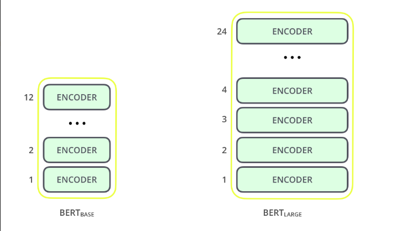
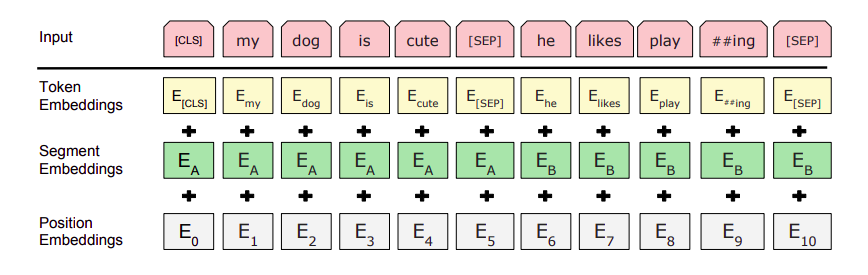
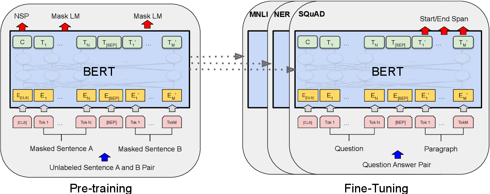
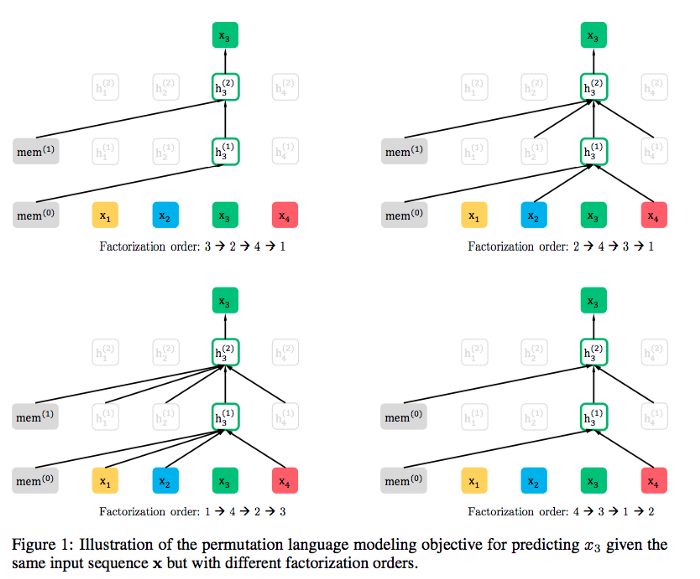
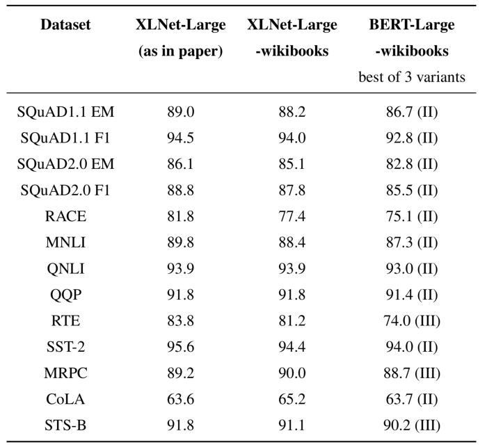
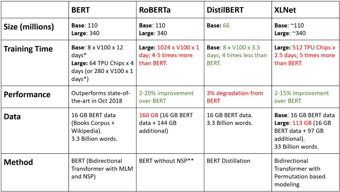

Transformer based model has been key to recent advancement in the field of Natural Language Processing. The reason behind this success is technique called Transfer Learning. Although computer vision practitioners are well-versed with this technique, it is relatively new to the field of NLP. In Transfer Learning, a model (in our case, a Transformer model) is pre-trained on a huge dataset using an unsupervised pre-training objective. This same model is then fine-tuned on the actual task. This approach works exceptionally well, even if you have as small as 500–1000 training samples.
Further, two pretraining objectives that have been successful for pretraining neural networks used in transfer learning NLP are autoregressive (AR) language modeling and autoencoding (AE). The AR model can only use forward context or backward context at a time whereas AE language model can do both at a same time. BERT is AE whereas GPT is AR language model.
BERT
BERT(Bidirectional Encoder Representations from Transformers ) as its name suggests is a bidirectional autoencoder(AE) language model. It obtained state-of-the-art results on 11 Natural Language Processing tasks when it was published.
How does BERT work?
Architecture
BERT currently has two variant.
- BERT Base: 12 layers, 12 attention heads, and 110 million parameters
- BERT Large: 24 layers, 16 attention heads, and 340 million parameters

Processing and Pre-training
BERT undergoes three layers of abstraction to preserve true meaning of input text.

BERT is pre-trained on two NLP tasks:
Masked Language Modelling : In a broad sense, it replaces word with [MASK] token and trains in such a way that model will be able to predict missing word.
Next Sentence Prediction : Here, given two sentences – A and B, model is asked to predict, is B the actual next sentence that comes after A in the corpus, or just a random sentence?
Lastly, we fine tune this pre-trained model to perform specific NLP task.

XLNet
XLNet is a “generalized” autoregressive(AR) language model that enables learning bidirectional contexts using Permutation Language Modeling. XLNet borrows the ideas from both AE and AR language model while avoiding their limitation. As per paper, XLNet outperforms BERT on 20 tasks, often by a large margin, including question answering, natural language inference, sentiment analysis, and document ranking.
How does XLNet work?
Architecture
Same as BERT, XLNet currently has two variant.
- XLNet-Base, cased: 12 layers, 12 attention heads, and 110 million parameters
- XLNet-Large, cased: 24 layers, 16 attention heads, and 340 million parameters
Processing and Pre-training
Permutation Language Modeling(PLM) is the concept of training bi-directional AR model on all permutation of words in a sentence. XLNet makes use of PLM to achieve state-of-the-art(SOTA) results. Besides, XLNet is based on the Transformer-XL which it uses as the main pretraining framework. It adopts the method like segment recurrent mechanism and relative encoding from Transformer-XL model.

Which one should you choose?
Both BERT and XLNet are impressive language model. I recommened you to start with BERT and Transformer-XL then get into XLNet.

